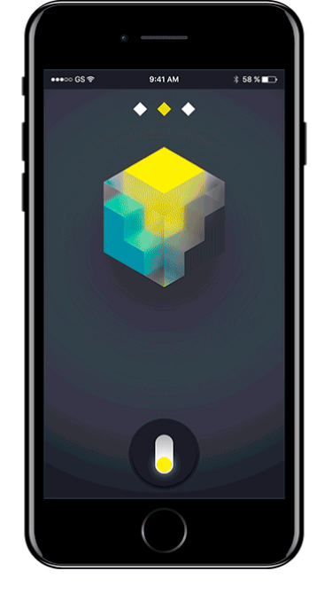
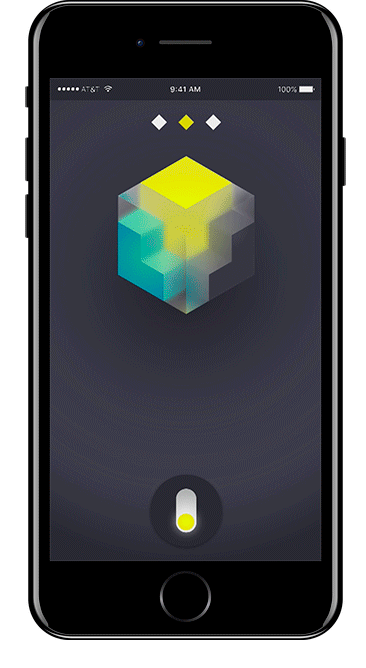
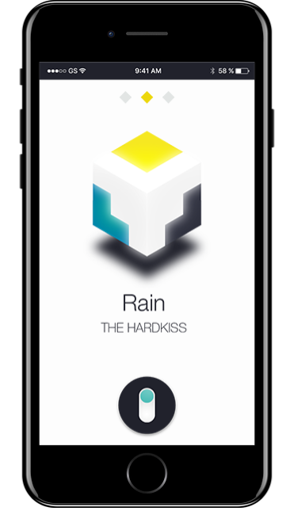
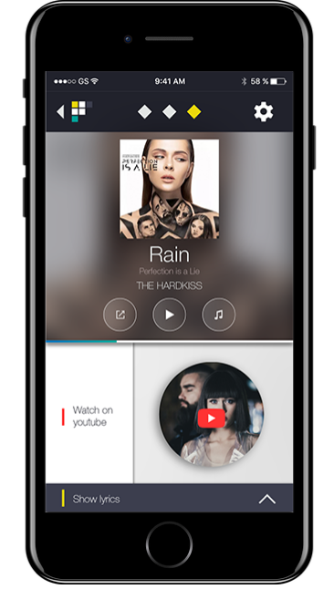
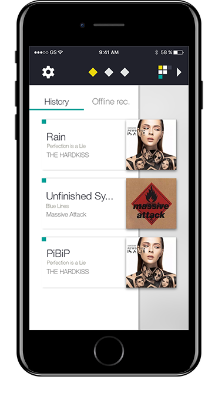

Задача: спроектировать мобильное приложение для распознавания музыки, разработать интерфейс и логотип к нему.
Задачи, с которыми должно справляться приложение:
• распознавание аудиотреков по записи или напеванию;
• сохранение результатов в историю поиска;
• предоставление подробной информации о треке: текст, ссылки на видео и др.
Цветовая палитра:

Интерфейс:

Основной экран при неактивированном поиске.
Анимация активации поиска после нажатия/свайпа кнопки.


Экран успешно завершённого поиска.
Экран, предоставляющий информацию об искомом треке.


Экран истории поиска.